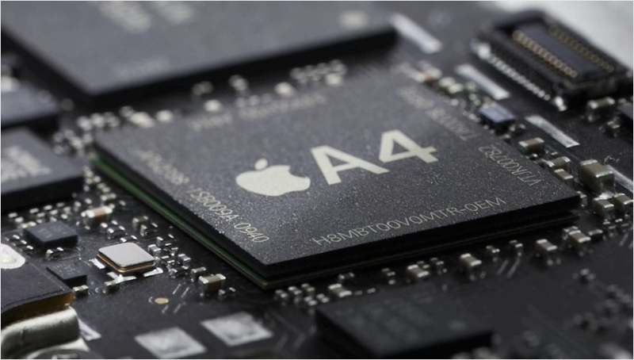
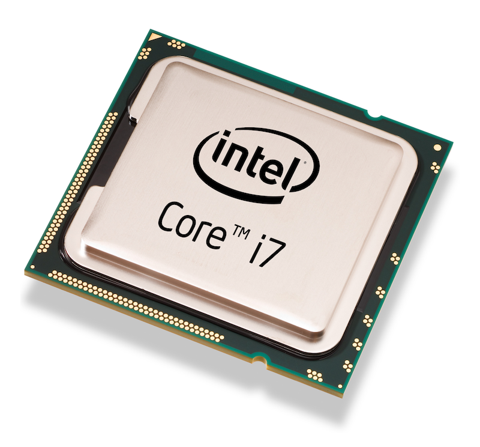
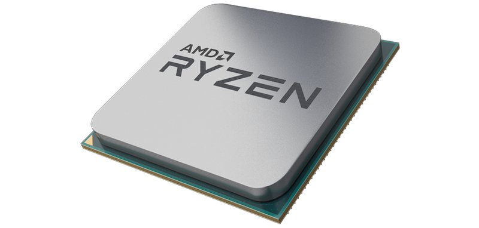

The Computer’s Microprocessor
The Computer’s Microprocessor¶
microprocessor
“The physical realization of the central processing unit of a given computer system on either a single chip of semiconductor or on a small number of chips.3”
The processor, also called a central processing unit (CPU), is one of the most important components of the motherboard and moreover the entire computer as its function is to be the “brain” of the computer1.
The processor performs arithmetic and logic operations such as addition, subtraction, comparison and as we learned in our class some other operation demonstrated in python in symbols such as <<, >>, OR and AND (part of the logic operations).
It takes binary input, executes mentioned above operations by its arithmetical and logical unit (ALU), control unit and a register array2. All the electric signals are one’s and lack of the signal is received as zeros. Thus, one operation at the time but up to billion operations per second is executed by our processor up until final products - the information we receive as users in the real time and this all from what we can see on the screen and beyond.
There are few benefits of microprocessors. First of all, they are very cheap and so overall the use of a microprocessor comes with price reduction for our computer. Microprocessors are fast, some can reach even up to billion operation per second and with that they consume very little power. Their size allowed us to place them into portable devices such as laptops, smartphones or even watches. Lastly, their failure rate is extremely low and they can be used for plenty of application2.
Below there are few examples of microprocessors. 4 6 5
- 3
Butterfield, A., & Szymanski, J. E. (2018). A dictionary of electronics and electrical engineering. Oxford University Press.
- 1
https://turbofuture.com/computers/the-motherboard-components
- 2(1,2)
https://www.brainspire.com/blog/what-is-a-microprocessor-and-how-does-it-work
- 4
https://appleinsider.com/articles/10/04/02/inside_the_ipad_apples_a4_processor
- 6
https://www.notebookcheck.net/Intel-Core-i7-1065G7-A-65-W-Ice-Lake-CPU.428176.0.html
- 5